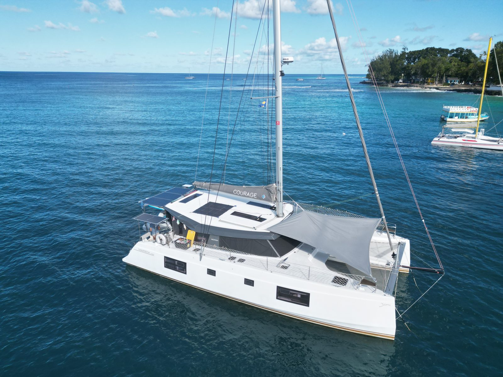
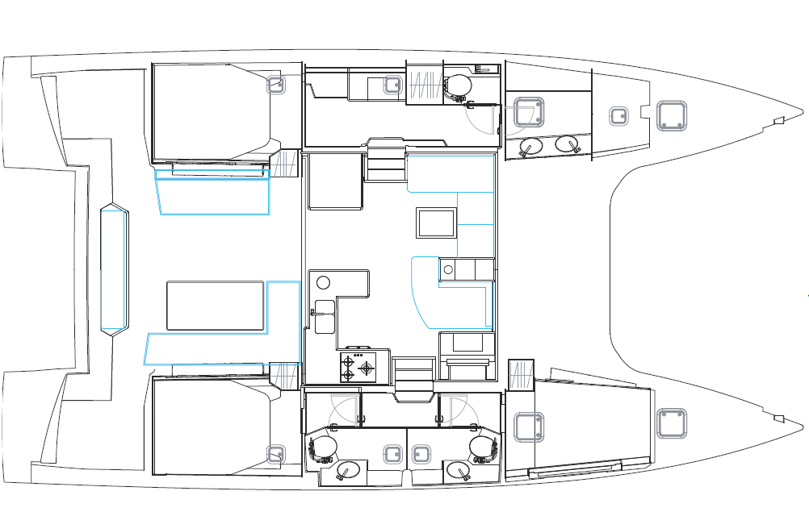

Courage
A one-owner, bluewater-ready 2023 Nautitech 46 Open

Courage anchored in Barbados, Jan 2026
Ready to cross an ocean, or just island hop
Courage is a 2023 Nautitech 46 Open, built to the Explorer specification and delivered new from the Nautitech factory in Rochefort, France in May 2023. Owned and sailed by a single owner since new, she has spent 2 seasons in the Med, crossed the Atlantic, and spent the past season cruising the Caribbean. Every engine hour, watermaker run&service, and maintenance action logged in detail from day one. She's currently hauled out at Hartman Cove, Grenada — a rare opportunity to buy a young, heavily-upgraded 46' cruising catamaran with a complete, documented history and no surprises. Courage has logged over 13,000 nautical miles, with the full voyage track available on NoForeignLand. You can also read the full owner's write-up on the Our Story page and can peek into the cruising lifestyle from their social media on the Photos & Videos page.
She's set up to go anywhere in comfort: a 990Ah lithium bank with 2,550W of solar, a backup generator, a 60L/hr watermaker, 4-zone air conditioning, dual Starlink systems, full offshore safety inventory, and tender&toys that make it all worth it — all turn-key and ready to cruise. Full details on every system are on the Specs & Inventory page.
As a brand, Nautitech has a long history of building fast, comfortable, and seaworthy cruising catamarans. The 46 Open is a proven design, with a large cockpit and saloon, three ensuite cabins in the owner's layout. Nautitech targets owners that want to explore the world with a balance of performance, comfort, and ease of handling. Compared to the major brands (e.g. Lagoon, FP, Leopard and Bali) Nautitech is a more performance-oriented catamaran, with a lighter displacement and a more efficient hull shape that can sail upwind to 38AWA and still keep sailing when the breeze drops. Compared to high perforamnce catamaran brands (e.g. Outremer, Balance, HH) Nautitech's lack of daggerboards and hull shape still allow the boat to carry a healthy payload and provide all the creature comforts. To get the same living space/comfort on a performance catamaran you'd need to step up to a 50-52' model which drives cost up significantly making Nautitech an excellent value. To learn more about the Nautitech 46 Open, including sales brochure, sailing polars, reviews and more visit the Factory Info page.
Three ensuite cabins, plus a forepeak guest berth

Official Nautitech 46 Open general arrangement plan.
Owner's write-up
We are selling our Nautitech 46 Open, which has been our home for the past three years. It's bittersweet for us but feel like it's the right decision for our family to allow our kids time home with family and community. We've lived abroard for 6 years, 3 in England and past 3 cruising. Our daughter is 14, and just started high school. We began this adventure with a 3 year plan anticipating that we'd return home this summer to allow our daughter a more normal high school experience. She is a passionate and talented musician and being back home is providing her so many opportunities to grow her musical career. She also just got accepted to the Bend School of Rock House Band and signed a one year contract with the group. We love that we can support her pursuits and give our boys an opportunity to pursue their own interests in rock climbing, mountain biking and skiing.
We bought Courage from Key Yachting in the UK and sailed her back from La Rochelle, France in May 2023, after NeoMarine outfitted her for off-grid living. We then spent two months outfitting her in Gosport, UK and moving aboard before leaving in August 2023 for the Mediterranean.
After two full seasons in the Med, she crossed the Atlantic in November 2025 — 17.5 days, 2,800nm from Gran Canaria to Barbados, averaging 6.7 knots while running the engines for under 10 hours total. We then spent the 2026 season exploring the Lesser Antilles, up to Saint Maarten and down to Grenada. Over our three years of ownership we've continued investing in upgrades for liveaboard comfort off-grid, and she's extremely well cared for with detailed maintenance records.
We're offering an extended handover and are open to delivering her anywhere in the Caribbean, or possibly farther. For US buyers: we have not imported her into the US or paid duties on her, so bringing her stateside would best be done under a foreign flag with a cruising permit to avoid import duties.
There's a lot more we love about calling her home — the layout, the sailing, life at anchor, and more — and Elizabeth has her own take on it too. Read our full story and everything we love about her →